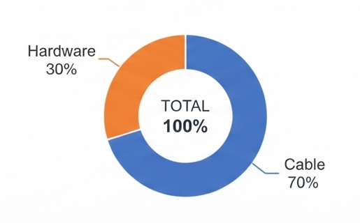

Nodex - Plataforma Logística
Panel del Supervisor de Logística — Gráfica
Panel principal
|
KPI Bobinas
|
Gráfica
|
Formato PDF
|
Cerrar sesión
Gráfica de Dona - Distribución Porcentual de Costos
(RF-4.10)

Figura 1. Porcentaje de costos: Cable vs Hardware — Proyecto Nodex.
← Regresar al panel principal